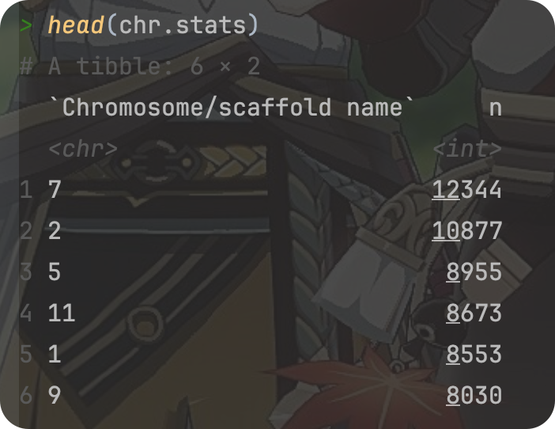
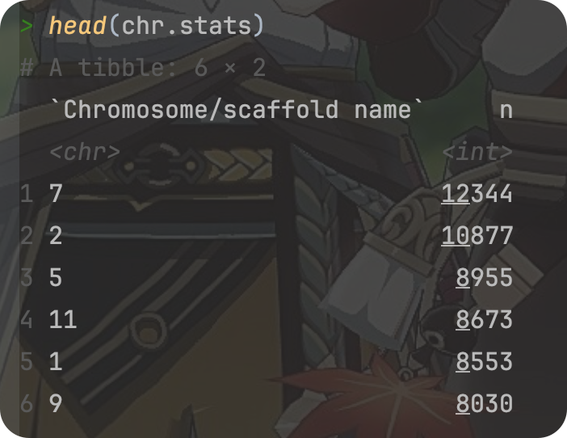

Review of the course “R for Data Science” Part 02(Talk 05~ 08)
Click here to return to the homepage.
Click here to return to part 01.
By Haoran Nie @ HUST Life ST
Partically translated by Rui Zhu @ HUST Life ST
双语版
Reference: R for Data Science
The book updated to 2nd ed. on July,2023, here’ s a link to the official website.
This work is licensed under CC BY-NC-SA 4.0


R for bioinformatics, data wrangler, part 1
Talk 05
View the original slide through this link.
View the original R markdown file of the slide through this link.
Pipe in R
What is pipe in R?
pipe 就是
%>%.It comes from the
magrittrpackage by Stefan Milton Bache.Packages in the
tidyverseload%\>%for you automatically, so you don't usually loadmagrittrexplicitly.实质是中间值的传递
Example
1library(tidyverse)2library(magrittr)3a =4 subset(swiss, Fertility > 20)5cor.test(a$Fertility, a$Education)

The code above can be replaced by:
xxxxxxxxxx31swiss %>%2 subset(., Fertility > 20) %$%3 cor.test(Education, Fertility)
所有函数都支持 pipe,通常需要用 . 指代传递来的数据，并以参数的形式赋予下游函数
%>%：最常见的管道操作符，用于将左侧表达式的结果作为右侧表达式的第一个参数。在这种情况下，右侧表达式的结果会成为整个管道表达式的结果。%T>%：将左侧表达式的结果传递给右侧表达式。然而，与%>%不同的是，整个管道表达式的结果是左侧表达式的结果，而不是右侧表达式的结果。%$%:允许你在管道的右侧直接访问左侧对象的内部元素，而无需重复指定左侧对象的名称。特别适合用于那些需要从同一个数据对象中提取多个元素进行操作的情况，这在处理复杂的表达式时特别有用，可以使代码更加简洁和清晰。%<>%:结合了%>%和赋值操作的功能，允许你在对一个对象进行操作的同时更新这个对象本身。这意味着你可以在管道中对一个对象进行一系列的操作，并且这些操作的结果会直接反映到原始对象上，而不需要进行额外的赋值步骤。特别适用于数据处理和清理的场景，其中你需要对一个数据对象进行一系列的操作，并希望操作的结果直接更新到这个对象上。这样可以使得代码更加整洁，并减少潜在的错误，因为你不需要记住为每个中间步骤创建一个新的变量。
egs:
%T>%: 返回上游值 (left-side values),操作符在那些需要执行某些操作但不改变原始数据的场景中非常有用。例如，你可能想要打印或绘制原始数据的某些特性，同时保持数据本身不变以便后续操作。
x1res1 <- 2 rnorm(100) %>%3 matrix(ncol = 2) %>%4 plot()#此步骤将整个流程的结果赋值给 res1。但 plot() 函数不会返回数据，所以 res1 将不包含任何数据。5
6res2 <- 7 rnorm(100) %>%8 matrix(ncol = 2) %T>%9 plot();#由于使用 %T>%，res2 将包含步骤 2 中生成的矩阵，而不是 plot() 的输出10
%$>%: Attach …
xxxxxxxxxx81attach( mtcars ); ## note the warning message ... 2cor.test( cyl, mpg ); ## 汽缸数与燃油效率3
4detach( mtcars );5with( mtcars, cor.test( cyl, mpg ) );6
7mtcars %$% 8cor.test( cyl, mpg );
%<>%
xxxxxxxxxx21## 双向 pipe 2mtcars %<>% transform(cyl = cyl * 2);ATTENTION
pipe 的使用可以使思路更清晰
因此，尽量使用
%>%（方向明确），而不使用其它方向不明确的 pipe
Data Wrangler - dplyr
What is dplyr?
The next iteration of
plyr,Focusing on only data frames (also tibble),
Row-based manipulation,
dplyris faster and has a more consistent API.
dplyr provides a consistent set of verbs that help you solve the most common data manipulation challenges:
select()
功能：
select()用于从数据框中选择一列或多列。常见用法：
select(data, column1, column2, ...)参数
data：数据框对象。column1, column2, ...：要选择的列的名称。
filter()
功能：
filter()用于根据条件筛选数据框中的行。常见用法：
filter(data, condition)参数
data：数据框对象。condition：筛选条件，可以是逻辑表达式。
mutate()
功能：
mutate()用于在数据框中添加新列或修改现有列。常见用法：
mutate(data, new_column = expression)参数
data：数据框对象。new_column = expression：创建或修改列的表达式。
summarise()
功能：
summarise()用于对数据框中的数据进行汇总或聚合操作。常见用法：
summarise(data, summary = function(column))参数
data：数据框对象。summary = function(column)：汇总或聚合操作，如求和、平均等。
arrange()
功能：
arrange()用于根据一列或多列对数据框中的行进行排序。常见用法：
arrange(data, column)参数
data：数据框对象。column：用于排序的列。可以添加多列进行多级排序。
e.g.
查看 mouse.tibble 的内容
xxxxxxxxxx211# Read the file2library(tidyverse)3mouse.tibble =4 read_delim(5 file = "data/mouse_genes_biomart_sep2018.txt",6 delim = "\t",7 quote = "",8 show_col_types = FALSE9 )10
11# View mouse.tibble content12ttype.stats =13 mouse.tibble %>%14 count(`Transcript type`) %>%15 arrange(-n)16
17# View mouse.tibble content, cont.18chr.stats =19 mouse.tibble %>%20 count(`Chromosome/scaffold name`) %>%21 arrange(-n) 
分析任务
将染色体限制在常染色体和XY上（去掉未组装的小片段） ; 处理行
将基因类型限制在 protein_coding, miRNA和 lincRNA 这三种；处理行
统计每条染色体上不同类型基因（protein_coding, miRNA, lincRNA）的数量
按染色体（正）、基因数量（倒）进行排序
用 dplyr 实现
xxxxxxxxxx191dat <- mouse.tibble %>% 2 ## 1. 3 4 filter( `Chromosome/scaffold name` %in% c( 1:19, "X", "Y" ) ) %>% 5 6 ## 2. 7 filter( `Transcript type` %in% c( "protein_coding", "miRNA", "lincRNA" ) ) %>%8 9 ## change column name ... 10 select( CHR = `Chromosome/scaffold name`, TYPE = `Transcript type`, 11 GENE_ID = `Gene stable ID`, 12 GENE_LEN = `Transcript length (including UTRs and CDS)` ) %>%13 14 ## 3. 15 group_by( CHR, TYPE ) %>% 16 summarise( count = n_distinct( GENE_ID ), mean_len = mean( GENE_LEN ) ) %>% 17 18 ## 4. 19 arrange( CHR , desc( count ) );检查运行结果
xxxxxxxxxx181knitr::kable( head( dat, n = 15 ) );2
3CHR TYPE count mean_len41 protein_coding 1200 2699.5900951 lincRNA 347 1206.7614961 miRNA 128 97.97656710 protein_coding 1020 2408.16454810 lincRNA 398 1220.35543910 miRNA 91 89.879121011 protein_coding 1640 2431.876661111 lincRNA 189 1134.491741211 miRNA 137 87.489051312 protein_coding 644 2523.948221412 lincRNA 327 1277.149791512 miRNA 146 86.246581613 protein_coding 831 2380.414991713 lincRNA 428 1251.045521813 miRNA 97 105.52577R for bioinformatics, data wrangler, part 2
Talk 06
View the original slide through this link.
View the original R markdown file of the slide through this link.
tidyr
pivot_longer()to take the place ofgatherpivot_wider()to take the place ofspread
Data Wrangler - tidyr
You can get tidyr in the package set tidyverse, or simply install it the first time you want to use it via install.packages("tidyr").
宽数据的特点
优点：
自然，易理解；
缺点：
不易处理；
稀疏时问题较大；
The usage of tidyr
宽和长数据的相互转换
xxxxxxxxxx191# Eg 12library(tidyverse)3grades2 =4 read_tsv(file = "data/grades2.txt")5
6grades3 =7 grades2 %>% 8 pivot_longer( 9 - name,#所有除 name 列之外的列将被转换为长格式。10 names_to = "course",#宽格式中的列名（如课程名称）将被转换并存储在名为 course 的新列中。11 values_to = "grade"#原始数据框中的值（如成绩）将被转换并存储在名为 grade 的新列中。12 )13
14# Eg 215grades3_wide = grades3_long %>% 16 pivot_wider(17 names_from = "course",# course 列的值将成为宽格式数据框的新列名。18 values_from = "grade"#grade 列的值将填充到相应的新列中。19 )If you meet NA in the 1st example, you can do like this:
xxxxxxxxxx141grades3_1 =2 grades3[!is.na(grades3$grade), ]3grades3_2 =4 grades3[complete.cases(grades3), ]5
6# A better solution7grades3_long = grades2 %>% 8 pivot_longer( - name, 9 names_to = "course", 10 values_to = "grade",11 values_drop_na = TRUE#删除任何包含 NA 的行。结果中只会包含完整的、没有缺失值的记录。12 )13
14# Pay attention to the variant named "values_drop_na"More functions in tidyr: (See @ https://r4ds.hadley.nz/data-tidy.html)
tidyr::separate()
将包含多个信息的单一列分割成多个列，以便于进行更深入的数据分析和可视化。
data: 数据框。col: 需要被分割的列。into: 一个字符串向量，包含新列的名称。sep: 分割符号。默认是非字母数字字符。remove: 是否移除原始列，默认为TRUE。convert: 如果设置为TRUE，尝试自动将分割后的字符串转换为适当的数据类型。
Usage:
xxxxxxxxxx131separate(2 data,3 col,4 into,5 sep = "[^[:alnum:]]+",6 remove = TRUE,7 convert = FALSE,8 extra = "warn",9 fill = "warn",10 ...11)12
13# Default parameters are listed.tidyr::unite()
将多个列合并成一个单独的列。
data: 数据框。new_col: 合并后的新列的名称。col1, col2, ...: 需要合并的列。sep: 合并时使用的分隔符，默认为下划线（_）。remove: 是否移除原始列，默认为TRUE。
Usage:
xxxxxxxxxx101unite(2 data,3 new_col, 4 col1, col2, ..., 5 sep = "_", 6 remove = TRUE, 7 na.rm = FALSE8)9
10# Default parameters are listed.R for bioinformatics, Strings and regular expression
Talk 07
View the original slide through this link.
View the original R markdown file of the slide through this link.
stringr
basics
length
uppercase, lowercase
unite, separate
string comparisons, sub string
regular expression
Before you start…
xxxxxxxxxx11library(stringr)Also notice other famous packages used to manipulating string:
stringi(Following are based on the official R Documentation)
Description
stringi is THE R package for fast, correct, consistent, and convenient string/text manipulation. It gives predictable results on every platform, in each locale, and under any native character encoding.
Usage of writeLines() (from official R Documentation)
Description
Write text lines to a connection.
Usage
xxxxxxxxxx11writeLines(text, con = stdout(), sep = "\n", useBytes = FALSE)
Arguments
text | A character vector |
|---|---|
con | A connection object or a character string. |
sep | character string. A string to be written to the connection after each line of text. |
useBytes | logical. See ‘Details’. |
Details
如果con是一个字符串，函数调用file来获得一个文件连接，该文件连接在函数调用期间被打开。 (tilde expansion of the file path is done by file.)
如果连接是打开的，则从其当前位置写入。如果未打开，则在wt模式下在调用期间打开，然后再次关闭。
正常情况下，writeLines用于文本模式连接，默认分隔符转换为该平台的正常分隔符（Unix/Linux上为LF,Windows上为CRLF）。为了获得更多的控制，打开一个二进制连接，并在sep中指定要写入文件的精确值。为了更好的控制，在二进制连接上使用writeChar。
useBytes is for expert use. Normally (when false) character strings with marked encodings are converted to the current encoding before being passed to the connection (which might do further re-encoding). useBytes = TRUE suppresses the re-encoding of marked strings so they are passed byte-by-byte to the connection: this can be useful when strings have already been re-encoded by e.g. iconv. (It is invoked automatically for strings with marked encoding "bytes".)
Difference between double quote(“”) and single quote(‘’)
In R and its string manipulation package stringr, there is no difference between strings defined with double quotes (") and single quotes ('). Both are used to define strings and you can use either depending on your preference or the situation.
例如，如果字符串包含单引号，您应该用双引号将字符串括起来，反之亦然。Here's an example:
xxxxxxxxxx51# Using double quotes when the string contains a single quote2string1 = "It's a beautiful day"3
4# Using single quotes when the string contains a double quote5string2 = 'He said, "Hello, world!"'In both cases, R will interpret the contents between the quotes as a string.
Some of the functions in the stringi package are similar in function to those that come with the system.
Here are some functions in the stringi package that share similar functionalities with base R's string functions, along with examples showcasing their differences:
stri_length()vs.nchar():stri_length()instringicalculates the number of code points in a string, accounting for Unicode characters.nchar()in base R counts the number of characters in a string, but it might not handle Unicode characters as accurately asstri_length().
xxxxxxxxxx101library(stringi)23# Using stri_length from stringi4string = "café"5stri_length(string)6# Output: 478# Using nchar from base R9nchar(string)10# Output: 4In this example, both
stri_length()andnchar()return the same count for ASCII characters. However, when dealing with Unicode characters,stri_length()can accurately count them as individual code points, whereasnchar()might not handle them correctly.stri_split_*()vs.strsplit():stri_split_*()functions instringisplit a string based on various criteria like fixed patterns, regular expressions, or character classes.strsplit()in base R performs a similar operation but might differ in handling certain edge cases and Unicode characters.
xxxxxxxxxx81# Using stri_split_* from stringi2string = "apple, orange, café"3stri_split_fixed(string, pattern = ", ")4# Output: list("apple", "orange", "café")56# Using strsplit from base R7strsplit(string, split = ", ")8# Output: list("apple", "orange", "caf", "é")Here,
stri_split_fixed()correctly splits the string, including the accented character "é," whilestrsplit()treats the accented "é" as two separate characters due to how it handles Unicode.stri_detect()vs.grepl():stri_detect()instringichecks if a pattern exists in a string and returns a logical value.grepl()in base R performs a similar task but might differ in its handling of Unicode characters and certain pattern matching options.
xxxxxxxxxx81# Using stri_detect from stringi2string = "This is a café"3stri_detect(string, regex = "café")4# Output: TRUE56# Using grepl from base R7grepl("café", string)8# Output: FALSEIn this example,
stri_detect()correctly detects the presence of the word "café," whilegrepl()returns a different result due to potential differences in Unicode handling or pattern matching options.
The examples highlight how stringi functions like stri_length(), stri_split_*(), and stri_detect() differ from their base R counterparts (nchar(), strsplit(), and grepl()) by providing more accurate handling of Unicode characters and often more versatile string manipulation options.
Some of the functions in the stringr package are similar in function to those that come with the system.
Here are examples comparing some functions from the stringr package with their counterparts from base R:
string length
str_length()vs.nchar():
xxxxxxxxxx101library(stringr)2
3# Using str_length from stringr4string = c("apple", NA, "banana", "")5str_length(string)6# Output: 5 NA 6 07
8# Using nchar from base R9nchar(string)10# Output: 5 NA 6 0str_length()和nchar()都计算每个字符串元素中的字符数。然而，str_length()通过返回NA来更一致地处理缺失值，而nchar()在某些情况下可能会以不同的方式处理NA。
str_sub()vs.substr():
xxxxxxxxxx81# Using str_sub from stringr2string = c("hello", "world", "example")3str_sub(string, start = 2, end = 4)4# Output: "ell" "orl" "xam"5
6# Using substr from base R7substr(string, start = 2, stop = 4)8# Output: "ell" "orl" "xam"str_sub()和substr()都根据指定的开始和结束位置提取子字符串。然而，str_sub()允许负索引从字符串的末尾开始计数，并且它更一致地处理缺失值。
str_replace()vs.sub()orgsub():
xxxxxxxxxx81# Using str_replace from stringr2string = c("apple pie", "banana bread", "cherry cake")3str_replace(string, pattern = "a", replacement = "X")4# Output: "Xpple pie" "bXnana bread" "cherry cXke" 5
6# Using sub from base R7sub(pattern = "a", replacement = "X", x = string)8# Output: "Xpple pie" "bXnana bread" "cherry cXke"str_replace()和sub()都用于替换字符串的部分内容。然而，str_replace()有一个更直观的界面，与sub()相比，它能更优雅地处理缺失值。
paste()vs.str_c()
string combine
xxxxxxxxxx71## 系统自带2paste( "a", "b", "c", sep = "" );3#[1] "abc"4
5## stringr 6str_c( "a", "b", "c" );7#[1] "abc"string comparison
strcmp 函数：
参数：
str1：第一个字符串。str2：第二个字符串。
返回值：
logical, i.e.
TRUEifs1ands2have the same length as character vectors and all elements are equal as character strings, elseFALSE.
strcmpi 函数：
参数：
str1：第一个字符串。str2：第二个字符串。
返回值：
类似于
strcmp，但是在不区分大小写的情况下进行比较。
xxxxxxxxxx121## direct comparison ; 可用于排序 ...2"A" > "abc";3#[1] FALSE4
5## 6library(pracma);7strcmp( "chen", "chenweihua" );8strcmpi( "chen", "CHEN" );9
10#11#[1] FALSE12#[1] TRUEThese examples demonstrate how stringr functions can be more consistent and user-friendly in handling various string operations compared to their base R counterparts.
(In the slide) Difference between toupper(), tolower() and stri_reverse()
The functions toupper() and tolower() in base R and stri_reverse() in the stringi package perform similar tasks, but there are some differences in their functionality and usage:
toupper()andtolower()in Base R:toupper()将字符串中的字符转换为大写。tolower()将字符串中的字符转换为小写。
xxxxxxxxxx81# Using toupper and tolower from base R2string = "Hello World!"34toupper(string)5# Output: "HELLO WORLD!"67tolower(string)8# Output: "hello world!"These functions are straightforward and work well for ASCII characters, converting them to uppercase or lowercase, respectively. However, they might not handle Unicode characters or locale-specific transformations.
stri_reverse()instringi:stri_reverse()颠倒字符串中字符的顺序，包括处理多字节字符和Unicode序列。
xxxxxxxxxx71library(stringi)23# Using stri_reverse from stringi4string = "café"56stri_reverse(string)7# Output: "éfac"stri_reverse()reverses the characters in the string accurately, even when dealing with Unicode characters or multibyte sequences. It ensures correct reversal of characters irrespective of their encoding.
The key distinction lies in the handling of character cases and character sequence reversal. While toupper() and tolower() focus on case transformations for ASCII characters, stri_reverse() in stringi concentrates on accurately reversing character sequences, making it more suitable for handling multibyte characters and Unicode strings.
Tricks
stringiThe functions in the package all start withstri_.strinrstarts withstr_.
Regex - Regular Expression
Character classes:What characters are (not) matched?

xxxxxxxxxx91## 比如： [ab] 表示寻找a 或 b 2c( "abc", "chen", "liu", "blah" ) %>% str_subset( "[ab]" );3
4#[1] "abc" "blah"5
6## 匹配并取出字符中间的数字 7c( "a1334bc", "ch13e_45n", "liu", "bl00ah" ) %>% str_extract( "\\d+" );8
9#[1] "1334" "13" NA "00" xxxxxxxxxx81# Example 012"abc_123_??$$^" %>% str_extract("\\s+") # Does this string include spaces? 3"abc_123_??$$^" %>% str_extract("\\d+") # Numbers? 4"abc_123_??$$^" %>% str_extract("\\w+") # [A-z0-9_]5
6[1] NA7[1] "123"8[1] "abc_123_"str_extract : Take out the first match.
Matching position

xxxxxxxxxx101# Example 022# STRING ending in 'wei'3c("chen wei hua", "chen wei", "chen") %>% str_subset("wei$")4
5#[1] "chen wei"6
7# CHARACTER ending in 'wei' 8c("chen wei hua", "chen wei", "chen") %>% str_subset("wei\\b")9
10#[1] "chen wei hua" "chen wei" Number of matches
xxxxxxxxxx101# Example 032"1234abc" %>% str_extract("\\d+")3"1234abc" %>% str_extract("\\d{3}")4"1234abc" %>% str_extract("\\d{5,6}")5"1234abc" %>% str_extract("\\d{2,6}")6
7[1] "1234"8[1] "123"9[1] NA10[1] "1234"Classes and groups

Special characters

tasks of regular expression
detect patterns ： 检查目标string里有无pattern
xxxxxxxxxx71grep( "\\d+", c( "123", "abc", "wei555hua" ) ); ##2grepl( "\\d+", c( "123", "abc", "wei555hua" ) ); ##3c( "123", "abc", "wei555hua" ) %>% str_detect( "\\d+" );4#5[1] 1 36[1] TRUE FALSE TRUE7[1] TRUE FALSE TRUEcount patterns：统计匹配的数量
xxxxxxxxxx71x <- c("why", "video", "cross", "extra", "deal", "authority");2str_detect(x, "[aeiou]");34str_count(x, "[aeiou]");5#6[1] FALSE TRUE TRUE TRUE TRUE TRUE7[1] 0 3 1 2 2 4locate patterns (定位)
xxxxxxxxxx91regexpr( "\\d+", c( "123", "abc", "wei555hua" ) ); ##2#3[1] 1 -1 44attr(,"match.length")5[1] 3 -1 36attr(,"index.type")7[1] "chars"8attr(,"useBytes")9[1] TRUEextract patterns (抽取匹配的字串)
xxxxxxxxxx21c( "123", "abc", "wei555hua" ) %>% str_extract ( "\\d+" );2c( "123", "abc", "wei555hua" ) %>% str_match ( "\\d+" );useful tools
https://regexr.com/ https://regex101.com/
str_extractvs.str_matchstr_extract：功能： 用于从字符串中提取匹配正则表达式的部分。
返回值： 返回匹配到的第一个子字符串（或整个字符串）。
str_match：功能： 用于从字符串中提取匹配正则表达式的全部信息，包括所有匹配的子字符串和捕获组。
返回值： 返回一个矩阵，每一行表示一个匹配，每一列表示一个捕获组。
xxxxxxxxxx201x;2#3[1] "why" "video" "cross" "extra" "deal"4[6] "authority"56str_extract(x, "[aeiou]");78#9[1] NA "i" "o" "e" "e" "a"1011str_match(x, "(.)[aeiou](.)"); ## extract the characters on either side of the vowel ????1213#14[,1] [,2] [,3]15[1,] NA NA NA16[2,] "vid" "v" "d"17[3,] "ros" "r" "s"18[4,] NA NA NA19[5,] "dea" "d" "a"20[6,] "aut" "a" "t"str_extract_all和str_match_allstr_extract_all：功能： 用于从字符串中提取所有匹配正则表达式的部分。
返回值： 返回一个列表，其中每个元素是一个字符向量，包含与正则表达式匹配的所有子字符串。
str_match_all：功能： 用于从字符串中提取所有匹配正则表达式的全部信息，包括所有匹配的子字符串和捕获组。
返回值： 返回一个列表，其中每个元素是一个矩阵，表示一个匹配，矩阵的每一列表示一个捕获组。
xxxxxxxxxx31x;2str_extract_all( x, "[aeiou]+" );3str_match_all( x, "[aeiou]+" );replace patterns (匹配并替换)
xxxxxxxxxx51str_replace( c( "123", "abc", "wei555hua" ) , "\\d+", "###");2str_replace_all( "123_abc_456_789" , "\\d+", "###");34#[1] "###" "abc" "wei###hua"5#[1] "###_abc_###_###"split by patterns
xxxxxxxxxx11str_split(x, "");
R for bioinformatics, data iteration & parallel computing
Talk 08
View the original slide through this link.
View the original R markdown file of the slide through this link.
TOC
for loop
applyfunctionsThe essence of
dplyris traversal.mapfunctions inpurrrpackageIteration and Parallel Computing
Iteration Basics
for loop , getting data ready
Look at this example:
xxxxxxxxxx311df =2 tibble( 3 a = rnorm(100), 4 b = rnorm(100), 5 c = rnorm(100), 6 d = rnorm(100)7 )8
9# Calculate row means 10res1 =11 vector("double", nrow(df))12for(row_idx in 1:nrow(df)){13 res1[row_idx] =14 mean( as.numeric(df[row_idx, ]))15}16
17res2 = c()18for(row_idx in 1:nrow(df)){19 res2[length(res2) + 1] =20 mean(as.numeric(df[row_idx, ]))21}22
23# Similar to Python24
25# Calculate column means 26res2 =27 vector("double", ncol(df))28for(col_idx in 1:ncol(df)){29 res2[col_idx] =30 mean(df[[col_idx]])31}You can replace it with for loop:
xxxxxxxxxx21rowMeans(df)2colMeans(df)Here are some other functions:
xxxxxxxxxx21rowSums(df)2colSums(df)apply functions
apply(X, MARGIN, FUN, ...);
MARGIN : 1 = 行， 2 = 列； c(1,2) = 行&列
FUN : 函数，可以是系统自带，也可以自己写
You can use apply with customizable function.
xxxxxxxxxx131df %>% apply(2 ., 3 2, 4 function(x) { 5 return(6 c(7 n = length(x), 8 mean = mean(x), 9 median = median(x) 10 )11 )12 } 13)Something about tapply():
The tapply() function in R 用于在向量的子集上应用函数，通过因子或因子列表将其拆分。 It stands for "table apply" and is particularly useful for summarizing data by groups or categories.
Here's a breakdown of its usage:
xxxxxxxxxx11tapply(X, INDEX, FUN)用 index 将 x 分组后，用 fun 进行计算
X: 要对其应用函数的向量（或数组）。INDEX:定义组的因子或因子列表。These factors determine how the vectorXis split.FUN: The function to be applied to each subset ofX.
For example:
xxxxxxxxxx51## 注意 pipe 操作符的使用2mtcars %$% tapply( mpg, cyl, mean ); ## 汽缸数 与 每加仑汽油行驶里程 的关系3#4 4 6 8 526.66364 19.74286 15.10000 然而，使用dplyr 思路会更清晰
xxxxxxxxxx11mtcars %>% group_by( cyl ) %>% summarise( mean = mean( mpg ) );tapply 和 dplyr 都是基于行的操作！！
lapply 和 sapply
基于列的操作
输入：
vector ： 每次取一个 element
data.frame, tibble, matrix : 每次取一列
list ： 每次取一个成员
输入是 tibble
xxxxxxxxxx21df %>% lapply( mean );2df %>% sapply( mean );输入是 list ，使用自定义函数
xxxxxxxxxx21list( a = 1:10, b = letters[1:5], c = LETTERS[1:8] ) %>% 2 sapply( function(x) { length(x) } );lapply是针对列的操作输入是 tibble, matrix, data.frame 时，功能与
apply( x, 2, FUN )类似 ...
Diffrences between apply in base R and the package dplyr:
applyfunctions in base R:The
applyfamily of functions (apply(),lapply(),sapply(),vapply(), etc.) in base R are used for applying a function over margins of arrays or data structures like matrices, arrays, and lists.apply()is used primarily for applying functions to the rows or columns of matrices or arrays, whilelapply()andsapply()are more focused on lists.这些函数对于跨行或跨列的重复操作非常有用，而无需显式使用循环。
Example:
xxxxxxxxxx61# Creating a matrix2mat = matrix(1:12, nrow = 3, ncol = 4)34# Applying sum function to rows (1) or columns (2) of the matrix5apply(mat, 1, sum) # Sums of each row6apply(mat, 2, sum) # Sums of each columndplyrpackage:dplyris a powerful package in R for data manipulation and transformation. It provides a set of functions (filter(),mutate(),select(),group_by(),summarize(), etc.) that enable easy and intuitive data manipulation.It's designed to work well with data frames and offers a more streamlined and readable syntax for performing common data manipulation tasks.
Example:
xxxxxxxxxx151library(dplyr)23# Creating a sample data frame4df = data.frame(5Name = c("Alice", "Bob", "Charlie"),6Age = c(25, 30, 28),7Salary = c(40000, 50000, 45000)8)910# Filtering and selecting specific rows and columns11filtered_df = df %>%12filter(Age > 25) %>%13select(Name, Salary)1415filtered_dfThis
dplyrexample filters rows whereAgeis greater than 25 and selects only theNameandSalarycolumns. The%>%operator (pipe) chains together multiple operations, making the code more readable and concise.
In summary, the apply family in base R is ideal for applying functions to matrices, arrays, or lists across rows or columns, while dplyr focuses on intuitive data manipulation operations for data frames, providing a cleaner syntax and ease of use for common data transformation tasks.
More on iteration: purrr package
About purrr (from official website https://purrr.tidyverse.org)
purrr enhances R’s functional programming (FP) toolkit by providing a complete and consistent set of tools for working with functions and vectors. If you’ve never heard of FP before, the best place to start is the family of map()functions which allow you to replace many for loops with code that is both more succinct and easier to read. The best place to learn about the map() functions is the iteration chapter in R for data science.
Usage
The following example uses purrrto solve a fairly realistic problem: split a data frame into pieces, fit a model to each piece, compute the summary, then extract the R2.
xxxxxxxxxx101library(purrr)2
3mtcars |> 4 split(mtcars$cyl) |> # from base R5 map(\(df) lm(mpg ~ wt, data = df)) |> 6 map(summary) %>%7 map_dbl("r.squared")8 9#> 4 6 8 10#> 0.5086326 0.4645102 0.4229655This example illustrates some of the advantages of purrr functions over the equivalents in base R:
The first argument is always the data, so purrr works naturally with the pipe.
All
purrrfunctions are type-stable. They always return the advertised output type (map()returns lists;map_dbl()returns double vectors), or they throw an error.All
map()functions accept functions (named, anonymous, and lambda), character vector (used to extract components by name), or numeric vectors (used to extract by position).
Detailed Usage
purrr is a powerful package in R that focuses on enhancing and simplifying the process of working with functions and vectors. Developed as part of the tidyverse ecosystem, purrr provides a consistent and coherent set of tools for functional programming, iteration, and working with lists and vectors.
Here are some key aspects and functionalities of purrr:
Functional Programming:
purrrpromotes functional programming paradigms in R, enabling users to work with functions as first-class objects.It provides functions like
map(),map2(),pmap(),walk(), and more, which allow applying functions over elements of lists or vectors.
Consistency Across Data Structures:
purrrfunctions exhibit consistent behavior across various data structures, such as lists, vectors, and data frames.These functions can work seamlessly with different data structures, making code more readable and maintainable.
Iteration and Mapping:
map()is a key function inpurrrthat iterates over elements of a list or vector, applying a function to each element and returning the results.map2()is similar tomap()but allows iterating over two vectors simultaneously.pmap()extends this functionality to iterate over multiple vectors or lists simultaneously.
Simplified and Cleaner Syntax:
purrrfunctions often provide a more consistent and cleaner syntax compared to base R functions for similar operations.The use of the pipe
%>%from the tidyverse allows chainingpurrrfunctions together, resulting in more readable code.
Working with Lists and Data Frames:
purrrprovides functions to efficiently manipulate and iterate over elements in lists and data frames.Functions like
map()andmap_dbl()can be used to apply functions to each column of a data frame and collect results in an output structure.
Example of map() in purrr:
xxxxxxxxxx101library(purrr)2
3# Applying sqrt function to each element of a list4numbers = list(a = 1:5, b = 6:10)5result = map(numbers, sqrt)6
7result8# Output: List of 29# $ a: num [1:5] 1 1.41 1.73 2 2.2410# $ b: num [1:5] 2.45 2.65 2.83 3 3.16This code applies the sqrt() function to each element of the list numbers, returning a list with the square roots of each element.
purrr simplifies and enhances functional programming in R, offering a consistent and expressive way to work with functions, lists, vectors, and data frames, making data manipulation and iteration more straightforward and concise.
Examples
Here are some specific functionalities and examples of purrr:
Mapping Functions:
map( FUN ):遍历每列（tibble）或 slot （list），
运行 FUN 函数，
将计算结果返回至 list
对应：
lapplyxxxxxxxxxx131library(purrr)23# Squaring each element in a vector using map()4numbers = 1:55squared = map(numbers, ~ .x^2)67squared8# Output: List of 59# $ : int 110# $ : int 411# $ : int 912# $ : int 1613# $ : int 25Mapping Functions over Multiple Inputs:
map2()allows applying a function that takes two inputs to corresponding elements of two vectors.xxxxxxxxxx121# Multiplying elements of two vectors element-wise2vector1 = 1:53vector2 = 6:104product = map2(vector1, vector2, ~ .x * .y)56product7# Output: List of 58# $ : int 69# $ : int 1410# $ : int 2411# $ : int 3612# $ : int 50Working with Data Frames:
map_df()and similar functions allow applying a function to each column of a data frame and combining results into a data frame.xxxxxxxxxx151# Creating a data frame2df = data.frame(A = 1:5, B = 6:10)34# Doubling each column in the data frame5doubled = map_df(df, ~ .x * 2)67doubled8# Output: A tibble: 5 × 29# A B10# <dbl> <dbl>11# 1 2 1212# 2 4 1413# 3 6 1614# 4 8 1815# 5 10 20Iteration and Applying Functions:
walk()applies a function to each element without returning a result, useful for side effects or performing operations without output.xxxxxxxxxx71# Printing each element of a list using walk()2fruits = list("apple", "banana", "orange")3walk(fruits, print)4# Output:5# [1] "apple"6# [1] "banana"7# [1] "orange"
对应 sapply 的 map_ 函数
map_lgl()makes a logical vector.map_int()makes an integer vector.map_dbl()makes a double vector.map_chr()makes a character vector.
xxxxxxxxxx11df %>% map_dbl( mean ); ## 注：返回值只能是单个 double 值purrr simplifies functional programming by providing intuitive functions (map(), map2(), walk(), etc.) that allow iteration over elements, applying functions, and collecting results, making code more concise and readable in scenarios involving lists, vectors, and data frames.
map 的高阶应用
为每一个汽缸分类计算： 燃油效率与吨位的关系
xxxxxxxxxx81plt1 <- 2 mtcars %>% 3 ggplot( aes( mpg, wt ) ) + 4 geom_point( ) + facet_wrap( ~ cyl );5mtcars %>% 6split( .$cyl ) %>%7map( ~ cor.test( .$wt, .$mpg ) ) %>% 8map_dbl( ~.$estimate );split( .$cyl ) : 由 purrr 提供的函数，将mtcars 按 cyl 列分为三个 tibble，返回值存入 list
注意： . 在 pipe 中代表从上游传递而来的数据；在某些函数中，比如 cor.test() ，必须指定输入数据，可以用 . 代替。
xxxxxxxxxx41## 正规写法：2map( function(df) { cor.test( df$wt, df$mpg ) } )3## 简写：4map( ~ cor.test( .$wt, .$mpg ) )~ 的用法 : 用于取代 function(df)
xxxxxxxxxx41## 完整版2map_dbl( function(eq) { eq$estimate} );3## 简写版4map_dbl( ~.$estimate )split 与 group_by 的区别
split：
功能：
split函数用于将数据框或向量按照指定的因子或列表进行分割，生成一个列表，其中每个元素都包含原始数据的一个子集。
group_by：
功能：
group_by函数通常与dplyr包一起使用，用于按照某一列或多列的值对数据进行分组。
(in the slide) Function reduce() and accumulate()
Both reduce() and accumulate() are powerful functions from the purrr package that facilitate iterative calculations over a sequence, accumulating or reducing values based on a specified function.
Here's an explanation of each:
reduce()Function:reduce()将列表的元素逐个进行二元操作，从左到右累积计算，最终返回一个单一的值。The function provided to
reduce()should take two arguments and return a single value.It starts by applying the function to the first two elements, then uses the result along with the next element, and so on, until the sequence is exhausted.
Example of
reduce():xxxxxxxxxx81library(purrr)23# Summing all elements in a vector using reduce()4numbers = 1:55total_sum = reduce(numbers, `+`)67total_sum8# Output: 15 (1 + 2 + 3 + 4 + 5 = 15)Here,
reduce()adds all the elements in thenumbersvector by applying the addition function (+) iteratively.accumulate()Function:accumulate()is similar toreduce()但返回的是一个累积计算的向量，而不是一个单一的值。它保留了每一步的计算结果。It applies a function cumulatively to the sequence and returns a vector of values, representing the intermediate results at each step.
Example of
accumulate():xxxxxxxxxx61# Calculating cumulative product of elements in a vector using accumulate()2factors = c(2, 3, 4, 5)3cumulative_product = accumulate(factors, `*`)45cumulative_product6# Output: 2 6 24 120 (2, 2*3, 2*3*4, 2*3*4*5)Here,
accumulate()applies the multiplication function (*) to each element infactors, returning a vector of cumulative products at each step.
reduce() aggregates a sequence into a single value based on a function, while accumulate() returns a sequence of intermediate results. Both functions are helpful for iterative calculations and provide different ways to process sequences of values in R.
Parallel Computing
并行计算介绍
并行计算一般需要3个步骤：
分解并发放任务
分别计算
回收结果并保存
Related Packages
parallel包：检测CPU数量；doParallel包：将全部或部分 分配给任务foreach包： 提供%do%和%dopar%操作符，以提交任务，进行顺序或并行计算%do%loop - foreach notation, but not parallel%dopar%adds parallelization
辅助包：
iterators包： 将 data.frame, tibble, matrix 分割为行/列 用于提交并行任务。
Step-by-step Guidance
Prepare Data:
Assume you have a large data frame named
my_datathat you want to process in parallel.Setup Parallel Processing:
Load necessary packages and initialize parallel processing capabilities.
xxxxxxxxxx121library(parallel)2library(doParallel)3library(foreach)4library(iterators)567# Set the number of cores/processors to be used8num_cores = detectCores()## 检测有多少个 CPU910# Initialize parallel backend11cl = makeCluster(num_cores)##创建了一个并行计算的集群12registerDoParallel(cl)##将这个集群注册为后端，以便后续的并行计算使用。Split Data Frame into Chunks:
Use the
iter()function from theiteratorspackage to create an 迭代器 for chunks of your data frame.xxxxxxxxxx51# Define chunk size2chunk_size = nrow(my_data) / num_cores34# Create an iterator for the chunks5my_iterator = iter(my_data, by = "row", chunksize = chunk_size)Perform Parallel Computation:
Use
foreach()from theforeachpackage along with%dopar%to apply a function to each chunk in parallel.xxxxxxxxxx111# Define a function to process each chunk2process_chunk = function(chunk) {3# Your processing logic for each chunk goes here4# For example: summary(chunk)5# Replace summary() with your specific data processing task6}78# Apply the function to each chunk in parallel9results = foreach(chunk = my_iterator, .combine = rbind) %dopar% {10process_chunk(chunk)11}Combine Results:
Collect and combine the results obtained from parallel processing.
xxxxxxxxxx51# Combine or process the results obtained from parallel computation2final_result = do.call(rbind, results)34# Close the parallel cluster5stopCluster(cl)
Replace the process_chunk() function with your specific data processing task. This approach parallelizes the processing of chunks of the data frame across multiple cores, allowing for faster computations, especially with large datasets.
Note:
When the task is completed, the allocated CPU core is reclaimed.
Ensure that your specific data processing task is compatible with parallelization and that the benefits of parallel computing outweigh the overhead of parallelization.
Also, consider potential dependencies or shared resources among iterations when parallelizing computations.
(in the slide) Function foreach()
Simple usage
Description
%do% and %dopar% are binary operators that operate on a foreach object and an R expression. The expression, ex, is evaluated multiple times in an environment that is created by the foreach object, and that environment is modified for each evaluation as specified by the foreach object. %do% evaluates the expression sequentially, while %dopar% evaluates it in parallel. The results of evaluating ex are 求值的结果以列表形式返回，但可以通过.confine参数进行修改
.combine = 'c' 参数的可能值：
'c' : 将返回值合并为 vector ；当返回值是单个数字或字符串的时候使用
'cbind' : 将返回值按列合并
'rbind' : 将返回值按行合并
默认情况下返回
list
Usage
xxxxxxxxxx191foreach(2 ...,3 .combine,4 .init,5 .final = NULL,6 .inorder = TRUE,7 .multicombine = FALSE,8 .maxcombine = if (.multicombine) 100 else 2,9 .errorhandling = c("stop", "remove", "pass"),10 .packages = NULL,11 .export = NULL,12 .noexport = NULL,13 .verbose = FALSE14)15e1 %:% e216when(cond)17obj %do% ex18obj %dopar% ex19times(n)嵌套 (nested) foreach
Expanded knowledge, not featured on slide, for understanding only.
Nested foreach loops in R allow for the iteration over multiple levels of nested structures or combinations of iterators. This approach is particularly useful when dealing with hierarchical data or when you need to perform computations on multiple levels of nested objects simultaneously.
有些情况下需要用到嵌套循环，使用以下语法：
xxxxxxxxxx61foreach( ... ) %:% {2 foreach( ... ) %dopar% {3 4 }5}6
Nested Iteration:
foreachsupports nesting, allowing you to iterate over multiple levels of nested structures, such as lists within lists or matrices within lists.xxxxxxxxxx111library(foreach)23# Example: Nested foreach loop iterating over a list of lists4outer_list = list(list(a = 1, b = 2), list(c = 3, d = 4))56foreach(inner_list = outer_list) %:% {7foreach(element = inner_list) %do% {8# Process each element within the nested structure9print(element)10}11}This code iterates over each element of
outer_list, which contains inner lists. Within each inner list, it iterates over the elements.Combining Iterators:
You can combine different iterators using
%:%to create nested iterations.xxxxxxxxxx81# Example: Nested foreach loop with combined iterators2values = 1:33letters = letters[1:4]45foreach(i = values) %:% foreach(letter = letters) %do% {6# Perform operations using both iterators7print(paste("Value:", i, "| Letter:", letter))8}This code creates nested iterations, iterating over
valuesandletterssimultaneously.Applying Nested Functions:
Nested
foreachloops are valuable when applying functions or performing operations that require iterating over multiple levels of nested data structures or combinations.xxxxxxxxxx71# Example: Applying a function with nested foreach loops2matrix_list = list(matrix(1:4, nrow = 2), matrix(5:8, nrow = 2))34foreach(mat = matrix_list) %:% foreach(element = as.vector(mat)) %do% {5# Perform computations on each element of each matrix6print(element * 2)7}Here, it iterates over a list of matrices and then iterates over each element within the matrices to perform computations.
Nested foreach loops in R allow for flexible and efficient iterations over hierarchical or nested structures, enabling complex computations, data manipulations, or simulations involving multiple levels of nested objects or iterators.
Click here to go to part 03.